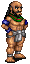
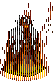
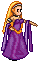
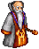
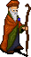
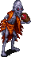

Religion
You may select your religion at level 8 by going to the temple of the religion you wish to join and completing a knowledge test. You may only select a religion once and this choice is permenant. Despite the permanency, it may be beneficial to choose your religion immediately, as the stats it provides will help you while leveling. You may also wish to join a religion after subpathing, as you will lose your religion-granted stats when subbing to your new class (although stats can be bought after mastering). However, priests should also choose a religion, as you must be a priest to obtain a religious relic.
You may also pray to the Gods within your trinity. That is, you can pray to the allies of your chosen God, at their respective temples, in order to gain their prayer benefits, but you cannot perform any altar activities, such as item consecration.
Religions
| God | Temple Location | Initiation Benefit | Prayer Effect | Item Enchant | Enemies | Allies |
|---|---|---|---|---|---|---|
|  Cail |
Undine | +3 Con |  +20 Hit |
+1 Con | Fiosachd & Sgrios | Glioca & Luathas |
| Ceannlaidir |
Piet | +3 Str |  +DMG |
+1 Str | Glioca & Luathas | Fiosachd & Sgrios |
|  Deoch |
Suomi | +4 Con -1 Wis |
 Regen |
Regen | Fiosachd & Luathas | Glioca & Sgrios |
 Fiosachd |
Abel | +3 Dex |  Group Hide (Not Self) |
+1 Dex | Cail & Deoch | Ceannlaidir & Gramail |
|  Glioca |
Mileth | +3 Wis |  Dion |
+1 Wis | Ceannlaidir & Gramail | Cail & Deoch |
|  Gramail |
Loures | +4 Wis -1 Con |
 Reflect |
Magic Resist | Glioca & Sgrios | Fiosachd & Luathas |
|  Luathas |
Rucesion | +3 Int |  +5 Int |
+1 Int | Ceannlaidir & Deoch | Cail & Gramail |
|  Sgrios |
Dubhaum Castle | +6 Str -2 Con -2 Wis |
-10 AC | +2 Str -1 Wis -1 Con |
Cail & Gramail | Ceannlaidir & Deoch |
Religious Activities
Prayer
The prayer activities vary depending on which god is being prayed to and all of which require labour.
| Activity | Effect |
|---|---|
| (Prayer Effect) | See above for a list of Prayer Effects for each God. |
| Sing the Song of (God). | Creates three teleportation scrolls that bring the user to the temple when used. |
| Pray for (God). | Increases your faith with the God. |
Cleric
These activies are performed by speaking to the cleric at the temple of your god. Additionally, you can access the God's Prayer for the allies of your god by visiting their temples and speaking with their clerics.
| Activity | Effect |
|---|---|
| (God's) Prayer. | Pray to the God. This will require labour. |
| Desecrate an enemy item. | Destroys an item of an enemy god in your inventory to reward faith. |
| Lost necklace. | Allows you to purchase a new prayer necklace. |
Altar
These activities can be performed at the foot of the altar of your gold, but not with the other gods in your trinity. These activities do not require labour. You will only be able to see these options if you have enough faith to perform them. You can increase your faith by praying or descrating items of enemy gods.
| Activity | Effect |
|---|---|
| Pray for the potion of life. | Awards a Beothaich Deum. (red potion) |
| Heal a scar of Sgrios. | Cures one scar of Sgrios from yourself. |
| Consecrate Item. | Enchants the item in the first slot of your inventory with your god's enchantment. |
| Pray for Insight | Awards experience. |
| Attempt Mass. | Awards faith to attendees. |
Priest Relics
Relics are obtained by priests when their faith exceeds the ability to perform mass. You receive the relic by re-entering the temple and receiving a pop-up. These relics are kept by the priest when subbing to another class.
| Name | First Option | Cooldown | Second Option | Cooldown |
|---|---|---|---|---|
 Cail |
Recall your party. (teleports party to you) |
2 hours | None | |
 Ceannlaidir |
Gain 10% max HP. (temporary) |
10 mins | Give 10% max HP to group. (temporary) |
10 mins |
 Deoch |
Feel the warmth of Deoch. (casts Inner Fire) |
10 mins | Summon Deoch's Curse. (casts Ard Cradh Gar) |
10 mins |
 Fiosachd |
Cloak your self in shadow. (casts Hide) |
1 min | Cloak your party in shadow. (casts group Hide) |
10 mins |
 Glioca |
Heal a scar of Sgrios from another. | 4 hours | Heal a scar of Sgrios from yourself. | 4 hours |
 Gramail |
Gain 10% max MP. (temporary) |
10 mins | Give 10% max MP to group. (temporary) |
10 mins |
 Luathas |
Fas Spiorad (sacrifice health for mana) |
10 mins | Mor Strioch Bais Gar (use all MP to attack all enemies) |
10 mins |
 Sgrios |
Empower yourself greatly. (+6 str) |
10 mins | Empower your party. (+3 str) |
10 mins |
Considerations
While there is no clear choice of which religion to take, the following are some things to consider:
- The initiation benefits provided by Cail, Deoch, and Glioca will improve your mana and health as you level.
- Fiosachd's prayer provides group stealth and may be useful when taken by a Rogue or White Bat Monk, as they will be able to stealth their party and themselves (using their own abilities).
- Glioca's prayer provides a 1 minute Dion effect, which may be useful if you do not have access to Dion.
- Luathas' prayer provides a temporary +5 intelligence, and may make certain stat builds easier. However, you may also join Cail or Gramail and still pray at the Luathas temple for this effect.
- All of the prayer effects, except for Luathas Gnosis (+5 Int), appear to be copies or variants of priest spells.
- If you are a priest, the relics of Cail (teleportion), Fiosachd (stealth), and Luathas (Fas Spiorad and MSBG) provide you with interesting benefits.